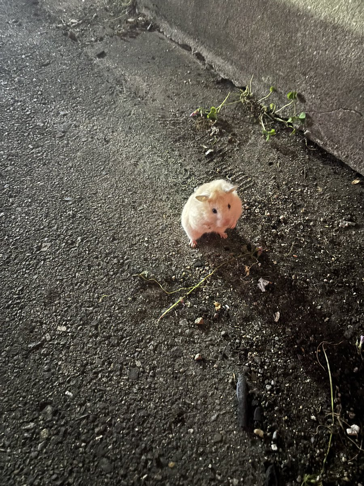
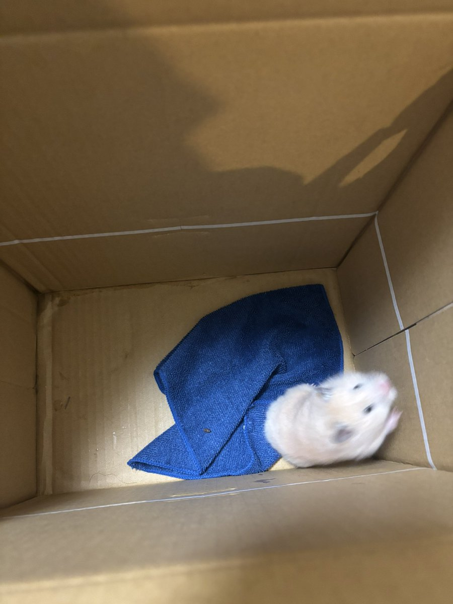

窪園チヨコは絶対ミスらない
@Rien6cf
RT @JJbcQRiOsdfmaEO: #拡散希望
今さっき（午後21時頃）大阪府大阪市島之内一丁目で野生？のハムスター発見して車に轢かれそうだったので保護したのでこれから大阪市中央区南警察署に届けます。
1週間飼い主が見つからなかったら保健所行きらしいので飼い主さんに届いて…


たかたか大阪DQWオラドラ相互
@JJbcQRiOsdfmaEO
#拡散希望
今さっき（午後21時頃）大阪府大阪市島之内一丁目で野生？のハムスター発見して車に轢かれそうだったので保護したのでこれから大阪市中央区南警察署に届けます。
1週間飼い主が見つからなかったら保健所行きらしいので飼い主さんに届いて欲しいので拡散お願いします。 https://t.co/cCT4b8UJyv